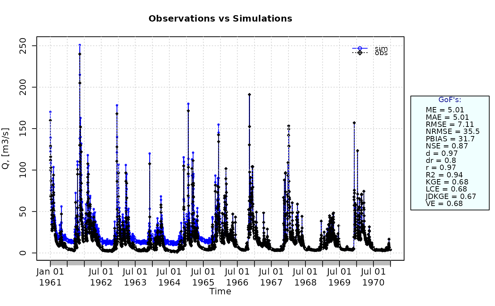

Percent Bias
pbias.RdPercent Bias between sim and obs, with treatment of missing values.
Usage
pbias(sim, obs, ...)
# Default S3 method
pbias(sim, obs, na.rm=TRUE, dec=1, fun=NULL, ...,
epsilon.type=c("none", "Pushpalatha2012", "otherFactor", "otherValue"),
epsilon.value=NA)
# S3 method for class 'data.frame'
pbias(sim, obs, na.rm=TRUE, dec=1, fun=NULL, ...,
epsilon.type=c("none", "Pushpalatha2012", "otherFactor", "otherValue"),
epsilon.value=NA)
# S3 method for class 'matrix'
pbias(sim, obs, na.rm=TRUE, dec=1, fun=NULL, ...,
epsilon.type=c("none", "Pushpalatha2012", "otherFactor", "otherValue"),
epsilon.value=NA)
# S3 method for class 'zoo'
pbias(sim, obs, na.rm=TRUE, dec=1, fun=NULL, ...,
epsilon.type=c("none", "Pushpalatha2012", "otherFactor", "otherValue"),
epsilon.value=NA)Arguments
- sim
numeric, zoo, matrix or data.frame with simulated values
- obs
numeric, zoo, matrix or data.frame with observed values
- na.rm
a logical value indicating whether 'NA' should be stripped before the computation proceeds.
When an 'NA' value is found at the i-th position inobsORsim, the i-th value ofobsANDsimare removed before the computation.- dec
numeric, specifying the number of decimal places used to rounf the output object. Default value is 1.
- fun
function to be applied to
simandobsin order to obtain transformed values thereof before computing this goodness-of-fit index.The first argument MUST BE a numeric vector with any name (e.g.,
x), and additional arguments are passed using....- ...
arguments passed to
fun, in addition to the mandatory first numeric vector.- epsilon.type
argument used to define a numeric value to be added to both
simandobsbefore applyingfun.It is was designed to allow the use of logarithm and other similar functions that do not work with zero values.
Valid values of
epsilon.typeare:1) "none":
simandobsare used byfunwithout the addition of any numeric value. This is the default option.2) "Pushpalatha2012": one hundredth (1/100) of the mean observed values is added to both
simandobsbefore applyingfun, as described in Pushpalatha et al. (2012).3) "otherFactor": the numeric value defined in the
epsilon.valueargument is used to multiply the the mean observed values, instead of the one hundredth (1/100) described in Pushpalatha et al. (2012). The resulting value is then added to bothsimandobs, before applyingfun.4) "otherValue": the numeric value defined in the
epsilon.valueargument is directly added to bothsimandobs, before applyingfun.- epsilon.value
-) when
epsilon.type="otherValue"it represents the numeric value to be added to bothsimandobsbefore applyingfun.
-) whenepsilon.type="otherFactor"it represents the numeric factor used to multiply the mean of the observed values, instead of the one hundredth (1/100) described in Pushpalatha et al. (2012). The resulting value is then added to bothsimandobsbefore applyingfun.
Details
$$PBIAS = 100 \frac{ \sum_{i=1}^N { \left( S_i - O_i \right) } } { \sum_{i=1}^N O_i} $$
Percent bias (PBIAS) measures the average tendency of the simulated values to be larger or smaller than their observed ones.
The optimal value of PBIAS is 0.0, with low-magnitude values indicating accurate model simulation. Positive values indicate overestimation bias, whereas negative values indicate model underestimation bias
Value
Percent bias between sim and obs. The result is given in percentage (%)
If sim and obs are matrixes, the returned value is a vector, with the percent bias between each column of sim and obs.
References
Yapo, P.O.; Gupta, H.V.; Sorooshian S. (1996). Automatic calibration of conceptual rainfall-runoff models: sensitivity to calibration data. Journal of Hydrology. v181 i1-4. 23–48. doi:10.1016/0022-1694(95)02918-4
Sorooshian, S., Q. Duan, and V. K. Gupta. 1993. Calibration of rainfall-runoff models: Application of global optimization to the Sacramento Soil Moisture Accounting Model, Water Resources Research, 29 (4), 1185-1194, doi:10.1029/92WR02617.
Note
obs and sim has to have the same length/dimension
The missing values in obs and sim are removed before the computation proceeds, and only those positions with non-missing values in obs and sim are considered in the computation
Examples
##################
# Example 1: basic ideal case
obs <- 1:10
sim <- 1:10
pbias(sim, obs)
#> [1] 0
obs <- 1:10
sim <- 2:11
pbias(sim, obs)
#> [1] 18.2
##################
# Example 2:
# Loading daily streamflows of the Ega River (Spain), from 1961 to 1970
data(EgaEnEstellaQts)
obs <- EgaEnEstellaQts
# Generating a simulated daily time series, initially equal to the observed series
sim <- obs
# Computing the 'pbias' for the "best" (unattainable) case
pbias(sim=sim, obs=obs)
#> [1] 0
##################
# Example 3: pbias for simulated values equal to observations plus random noise
# on the first half of the observed values.
# This random noise has more relative importance for ow flows than
# for medium and high flows.
# Randomly changing the first 1826 elements of 'sim', by using a normal distribution
# with mean 10 and standard deviation equal to 1 (default of 'rnorm').
sim[1:1826] <- obs[1:1826] + rnorm(1826, mean=10)
ggof(sim, obs)

pbias(sim=sim, obs=obs)
#> [1] 31.6
##################
# Example 4: pbias for simulated values equal to observations plus random noise
# on the first half of the observed values and applying (natural)
# logarithm to 'sim' and 'obs' during computations.
pbias(sim=sim, obs=obs, fun=log)
#> [1] 18.8
# Verifying the previous value:
lsim <- log(sim)
lobs <- log(obs)
pbias(sim=lsim, obs=lobs)
#> [1] 18.8
##################
# Example 5: pbias for simulated values equal to observations plus random noise
# on the first half of the observed values and applying (natural)
# logarithm to 'sim' and 'obs' and adding the Pushpalatha2012 constant
# during computations
pbias(sim=sim, obs=obs, fun=log, epsilon.type="Pushpalatha2012")
#> [1] 18.2
# Verifying the previous value, with the epsilon value following Pushpalatha2012
eps <- mean(obs, na.rm=TRUE)/100
lsim <- log(sim+eps)
lobs <- log(obs+eps)
pbias(sim=lsim, obs=lobs)
#> [1] 18.2
##################
# Example 6: pbias for simulated values equal to observations plus random noise
# on the first half of the observed values and applying (natural)
# logarithm to 'sim' and 'obs' and adding a user-defined constant
# during computations
eps <- 0.01
pbias(sim=sim, obs=obs, fun=log, epsilon.type="otherValue", epsilon.value=eps)
#> [1] 18.7
# Verifying the previous value:
lsim <- log(sim+eps)
lobs <- log(obs+eps)
pbias(sim=lsim, obs=lobs)
#> [1] 18.7
##################
# Example 7: pbias for simulated values equal to observations plus random noise
# on the first half of the observed values and applying (natural)
# logarithm to 'sim' and 'obs' and using a user-defined factor
# to multiply the mean of the observed values to obtain the constant
# to be added to 'sim' and 'obs' during computations
fact <- 1/50
pbias(sim=sim, obs=obs, fun=log, epsilon.type="otherFactor", epsilon.value=fact)
#> [1] 17.6
# Verifying the previous value:
eps <- fact*mean(obs, na.rm=TRUE)
lsim <- log(sim+eps)
lobs <- log(obs+eps)
pbias(sim=lsim, obs=lobs)
#> [1] 17.6
##################
# Example 8: pbias for simulated values equal to observations plus random noise
# on the first half of the observed values and applying a
# user-defined function to 'sim' and 'obs' during computations
fun1 <- function(x) {sqrt(x+1)}
pbias(sim=sim, obs=obs, fun=fun1)
#> [1] 17.7
# Verifying the previous value, with the epsilon value following Pushpalatha2012
sim1 <- sqrt(sim+1)
obs1 <- sqrt(obs+1)
pbias(sim=sim1, obs=obs1)
#> [1] 17.7